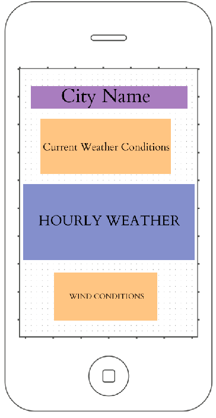
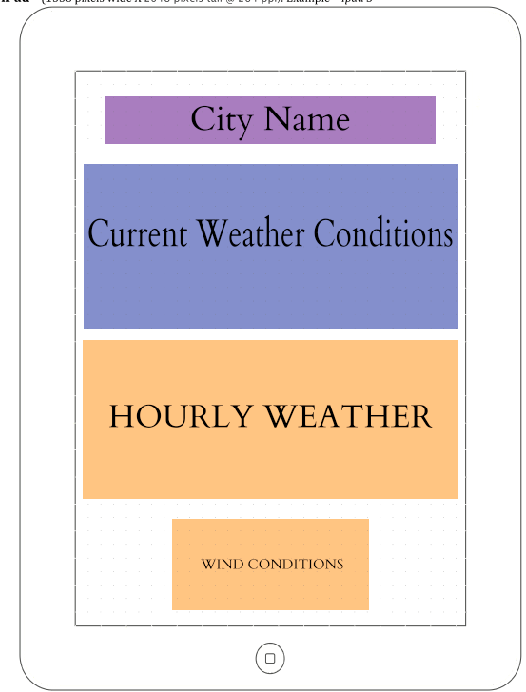
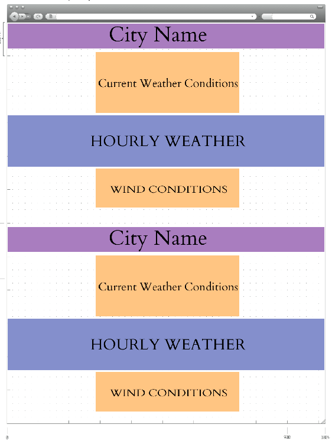

Purpose
To inform the public of the weather in specific cities. Giving clear and precise hourly temperature changes, wind direction and speed changes, and finally show easy to understand graphics of what the current weather condition is.
Audience
The main audience is those aged 15-50, it’s a large age group, but everyone cares about the weather. People from all walks of life will be using this website, no education, those with Ph.D.’s, and people who have high or low incomes. Since weather effects the entire population, their social standing doesn’t matter. The audience will be trying to figure out the weather for the day. Most likely they will be checking the weather on their phone or computer before they head out for the day. Since the only locations we have currently are for Idaho, our audience is solely based in Idaho, or for people travelling to Idaho. The site would be being visited basically whenever the user is going out for the day. Inside you can wear any clothing as you determine the temperature in your house, but before going out, you need to look at the weather to determine if you should change, bring an umbrella, etc.
Persona
Persona: Idaho ResidentPhoto:

Fictional Name: Stewart Larson
Job Title: College Teacher
Demographics:
- 50
- 2 grown kids
- Travels to work
Quote: “I wonder if it is going to rain today.”
Sketches
Small
Medium
Large
Peer Review
I had three of my peers go over my information!
- Ashley Nielson
- Change the age range
- Grant Hopkins
- Change the age range
- Sarah Barrett
- Change the age range